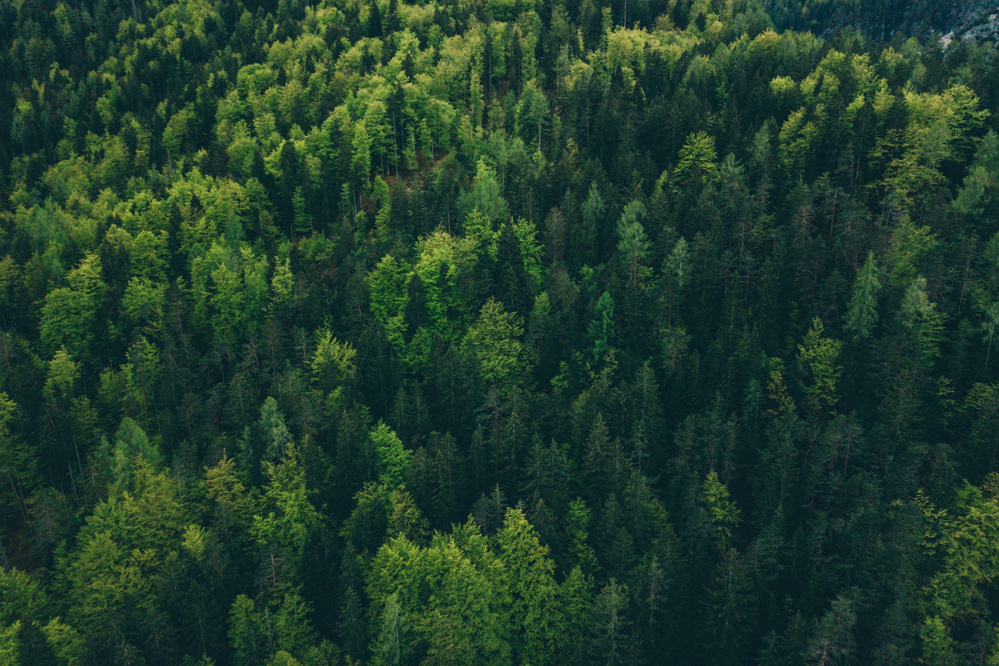
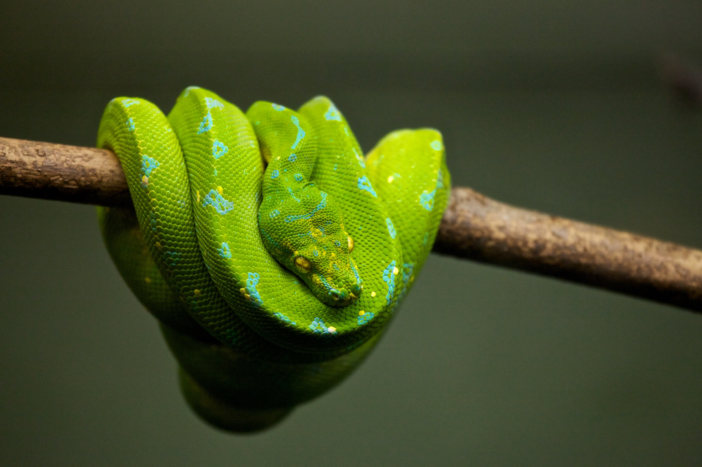
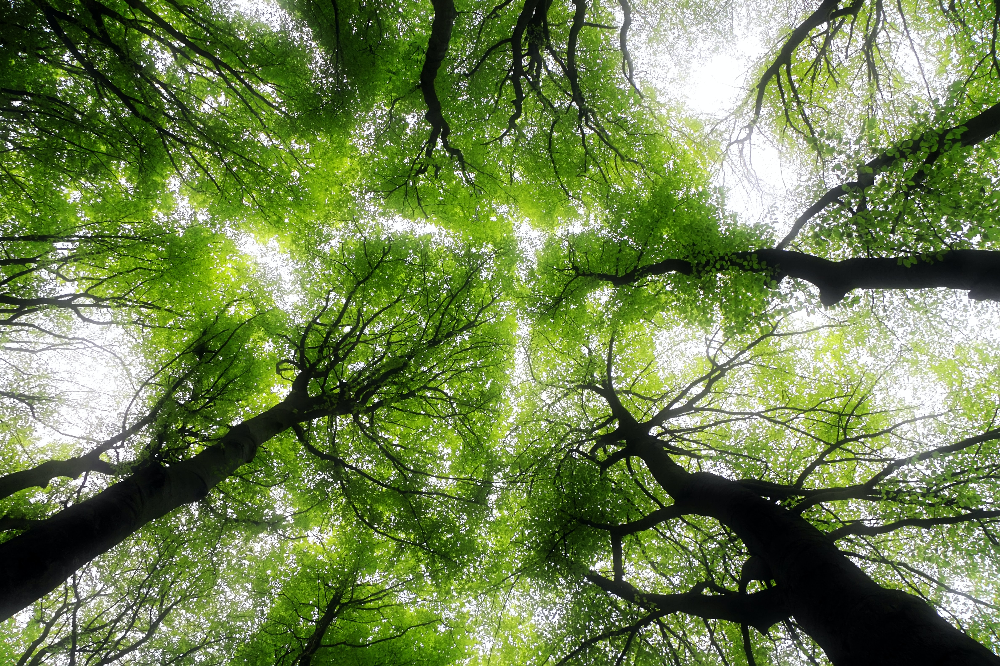

A & M New York Design
American Forests and the World Economic Forum are leading 1t.org, a global movement to conserve, restore and grow 1 trillion trees around the world by 2030. Companies, governments and nonprofits across the U.S. are doing their part to bring back our forests. And now, it’s never been easier to get involved.
American Forests and the World Economic Forum are leading 1t.org, a global movement to conserve, restore and grow 1 trillion trees around the world by 2030. Companies, governments and nonprofits across the U.S. are doing their part to bring back our forests. And now, it’s never been easier to get involved.



|
The word forest broadly describes an area that has a large number of trees. There are three general types of forest that exist: temperate, tropical, and boreal. Experts estimate that these forests cover approximately one-third of Earth’s surface. |
|---|
Core Value

American Forests and the World Economic Forum are leading 1t.org, a global movement to conserve, restore and grow 1 trillion trees around the world by 2030. Companies, governments and nonprofits across the U.S. are doing their part to bring back our forests. And now, it’s never been easier to get involved.
American Forests and the World Economic Forum are leading 1t.org, a global movement to conserve, restore and grow 1 trillion trees around the world by 2030. Companies, governments and nonprofits across the U.S. are doing their part to bring back our forests. And now, it’s never been easier to get involved.
P.P.P.S.T
|
Protect |
The word forest broadly describes an area that has a large number of trees. There are three general types of forest that exist: temperate, tropical, and boreal. Experts estimate that these forests cover approximately one-third of Earth’s surface. |
|---|---|
|
Temperate forests are found across eastern North America and Eurasia. The temperatures of temperate forests vary throughout the year because of the four distinct seasons at these latitudes. Precipitation is abundant and lends to fertile soil that is able to support diverse flora like maples, oak, and birch. Deer, squirrels, and bears are just a few examples of the fauna that call temperate forests home. |

Personal connection |


Preserve |
Tropical forests are common to areas near the equator, such as Southeast Asia, sub-Saharan Africa, and Central America. Temperatures in tropical forests have been reported to range between 20 and 31°C (68 and 88°F). Tropical rainforests are the epitome of biodiversity. Animals include the endangered harpy eagle (Harpia harpyja)—a large predatory bird—which has become scarce throughout Central and South America, largely due to habitat loss. |
|
Tropical mangrove forests, characterized by trees and shrubs that grow in salty or brackish water, are found in the tropics and subtropics. The red mangrove forest on the Panamanian island of Escudo de Veragua is home to the critically endangered pygmy three-toed sloth (Bradypus pygmaeus). |

Sustainability |
|

Travel |
The third type of forest is the boreal forest, also known as taiga. Boreal forests, one of the world’s largest land biomes, are found across Siberia, Scandinavia, and North America (Alaska and Canada). Boreal forests have a significant role in removing carbon dioxide from the atmosphere. Temperatures in boreal forests are, on average, below freezing. Conifers, spruce, fir, and pine trees are the predominant needle-leaf plant species in boreal forests. Moose and deer are just a couple of examples of large herbivorous mammals in this environment. Most birds native to the taiga migrate to find warmer conditions during the forest’s harsh winters. |
| Contact | About Us | Help |
| +0 (000) 000-0000 | Who we are | Resources Page |
| RandomBusinessEmail@RandomBusinessEmail.com | Mission | More Resources |